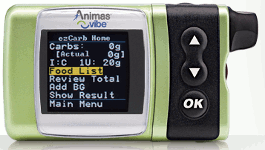

|
|
|
|  | |
| Pump data | More info about pump in Pump plugin... |
|---|---|
| Weight [oz] | 3.9 |
| Screen Size |
992 sq mm |
| Colors | blue, silver, black, pink, green |
| Battery | AA lithium or alkaline x 1 |
| Battery Life (weeks) | 4-6 with lithium, 1-4 with alkaline |
| Memory | non-volatile: 500 boluses, 270 basals, 120 daily totals, 60 alarms, 60 primes, 900 bg levels |
| Software Download |
DiaSend portal (www.diasend.com) |
| Water? | 12 ft for 24 hrs |
| CGMS | Dexcom G4, integrated into Pump (display and enter of data on Pump). |
| Transmiter Size (Length,Width,Thickness) |
3.8 cm x 2.3 cm x 1.3 cm |
| Pump Memory Storage (for CGMS) |
About 2-3 months of CGMS data. |
| Guarantee | 4 years |
| Sensor Life | 7 days |
| Sensor Canula size |
13 mm |
| Angle of Sensor Insertion |
45º |
| Insertion Device | DexCom G4 Applicator (comes with sensors) |
| Start-Up Initialization Time |
2 hours |
| Calibration | every 12 hours with any meter |
| User set alarms on low/high |
Yes, one high, two low (user set limit + 55mg/dl alarm) |
| Predictive alarms for low/high |
yes |
| Alarms for rate of change |
yes |
| Displays glucose numbers |
Every 5 minutes |
| Displays Directional Trends |
Yes, displays a 1, 3, 6, or 12 hour glucose graph |
| Displays Rate of Change |
Yes, arrows indicate steady, slow/medium/fast rise or fall |
| Review glucose data? |
Yes, last 24 hours |
| Alarms, vibrates, or both |
Alarm or Vibrate, vibrate for low first, then alarm |
| Waterprooof Transmitter |
Yes, up to 3 ft for 30 min |
| Transmitter Batteries |
Life 6 months (can last up to 12 months), non-replaceable. |
| Range | 5 feet |
| Snooze Alarm |
Yes |
| Warranty | 6 transmitter |